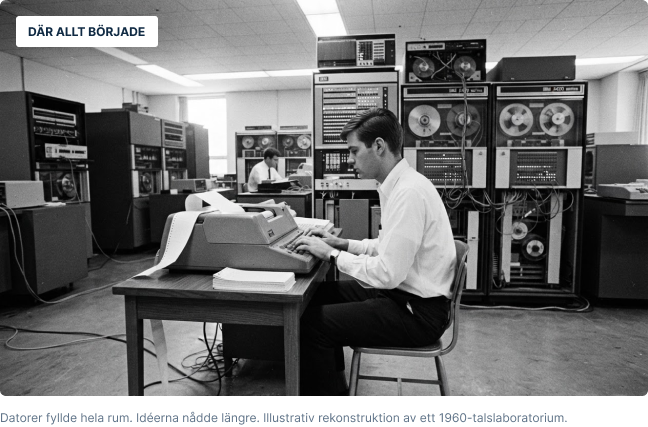

1969
ARPANET föds
Fyra forskningsmiljöer i USA kopplas ihop. Det första meddelandet skickas.
Hur blev några sammankopplade datorer en del av nästan allt vi gör? Upptäck tekniken, människorna och idéerna som formade internet.

Internet och webben är inte samma sak.
Internet är nätverket som kopplar ihop datorer. Webben är en av tjänsterna på nätet - precis som e-post och videosamtal.
Från ett forskningsprojekt till en uppkopplad värld.
Fyra forskningsmiljöer i USA kopplas ihop. Det första meddelandet skickas.
ARPANET går över till TCP/IP – grunden för dagens internet.
Tim Berners-Lee föreslår ett system av länkade dokument på CERN.
CERN gör webbtekniken fritt tillgänglig. Mosaic förenklar surfandet.
Smarttelefoner blir startskottet för en allt mer mobil vardag.
Molntjänster, AI och sakernas internet skapar nya möjligheter och frågor.
Välj ett spår och fördjupa din förståelse.
Från datapaket och TCP/IP till fiber och 5G. Förstå tekniken som gör det möjligt att vara uppkopplad.
Möt Tim Berners-Lee, forskaren som skapade World Wide Web och ville göra kunskap tillgänglig för alla.
Hur går en idé till färdig webbplats? Utforska ett arbetssätt med korta steg, samarbete och återkoppling.
Följ med på en snabb resa genom internets historia. Här knyter vi ihop de viktigaste idéerna.
Kort sagt: öppna standarder lät olika nät växa ihop.
Var något extra intressant eller svårt att förstå? Dela en tanke så kan läromaterialet bli tydligare.
Skriv gärna en sak du lärde dig och en fråga du vill veta mer om.
Fält markerade med * är obligatoriska.
Formulärförslag – inga uppgifter skickas i denna visning.